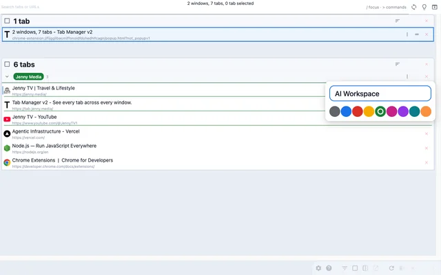
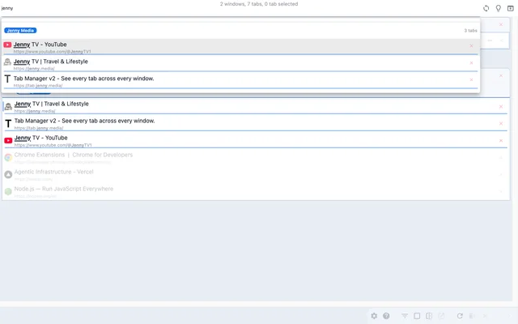
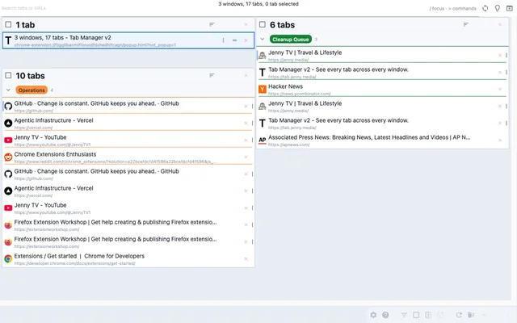
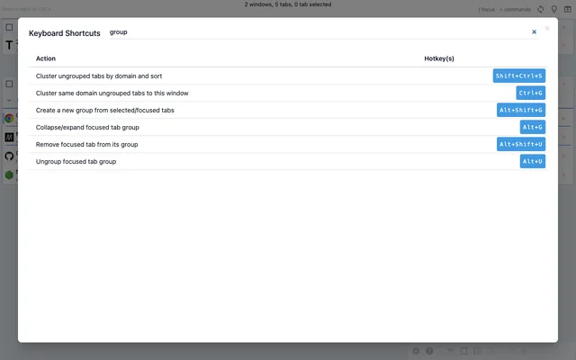
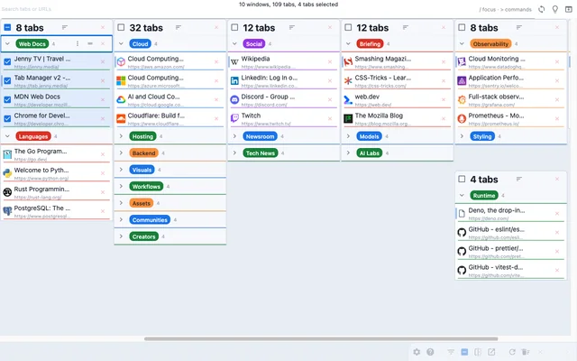
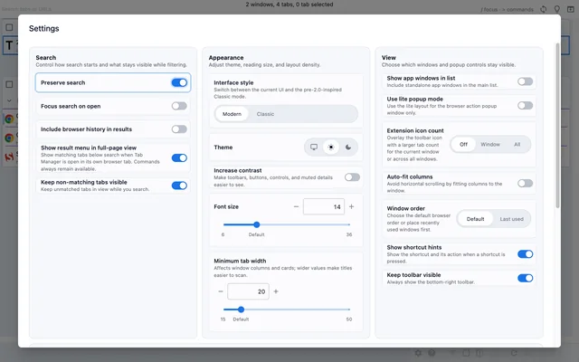

{kind=link}
{kind=link}
{kind=link}
{kind=link}
{kind=link}
{kind=link}
Find Tabs Across Windows
Search open tabs by title or URL, with optional browser history results in the same search box.
See every tab across every window in one searchable workspace.
Find tabs fast, move matching tabs in bulk, manage native tab groups where supported by the browser, and clean up duplicates without window hopping.
Free, open source, with core functionality running locally in your browser.


Edit native tab groups where supported by the browser.
Search across windows and grouped tabs from one place.
Spot duplicate tabs fast and close them in bulk.
Learn the shortcut map without leaving the interface.
Stay oriented inside large native tab groups where supported by the browser.
Adjust the view to match your workflow.Search, clean up, organize, and customize tabs in one quick walkthrough, then see how it handles a crowded workspace.
Jump To A Scene
Synthetic local-fixture demo focused on UI behavior at scale.
When your browser turns into a working set, the hard part is no longer opening tabs. It is finding, comparing, and cleaning them up quickly.
Native tab strips and window hopping
One searchable workspace
Use it when you need to find something fast, clean something up, or reshape a crowded browsing session.
Search open tabs by title or URL, with optional browser history results in the same search box.
Navigate windows, tabs, and actions from the keyboard, with shortcut help and a command palette built in.
Select search matches and move them to another window, group them, or open them in a new window in one step.
Highlight duplicate tabs and remove them quickly to reduce clutter and wasted memory.
Rename, recolor, collapse, and reorganize browser-native groups without leaving the extension where supported by the browser.
Adjust theme, tab width, font size, toolbar behavior, URL visibility, and related display preferences.
Safari does not support the
tabs.move() WebExtension API that Tab Manager v2
relies on for drag-and-drop reordering and moving tabs between
windows, so the experience would be incomplete.
Settings are stored in browser sync storage when the browser supports it. If sync storage is unavailable, the extension falls back to local storage so everything still works.
Tab Manager v2 uses tabs, storage, and
management for core tab and window management. It
also includes history for the optional browser
history search setting, tabGroups on supported
browsers for native tab-group features, and
contextualIdentities plus cookies on
Firefox for container-aware features. Your tab data stays in
your browser, and the extension does not add analytics or
tracking.
Yes, where supported by the browser. Tab Manager v2 lets you manage native tab groups directly without leaving the extension.
No. If you want labels for related tabs, use your browser's native tab groups instead. Tab Manager v2 can rename and recolor those groups where supported by the browser.